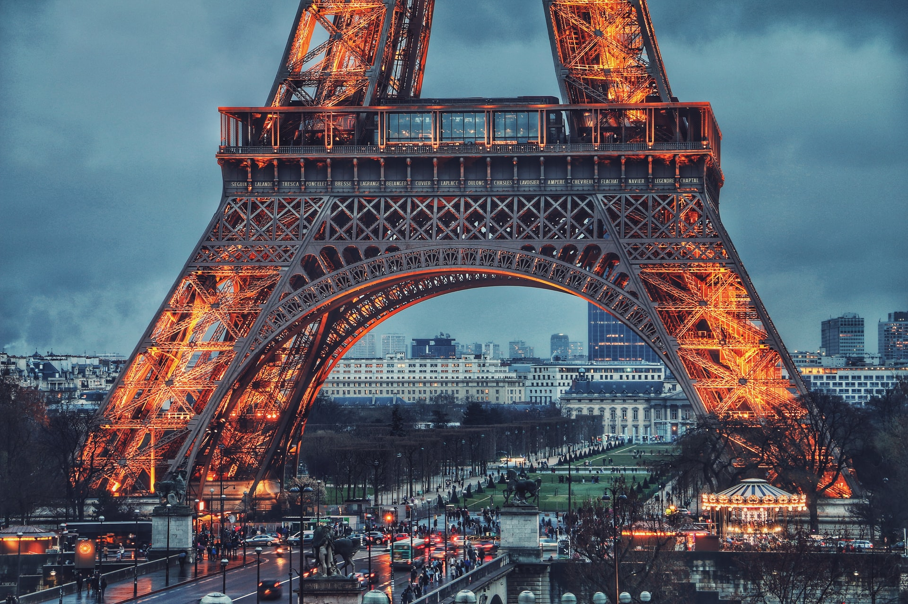
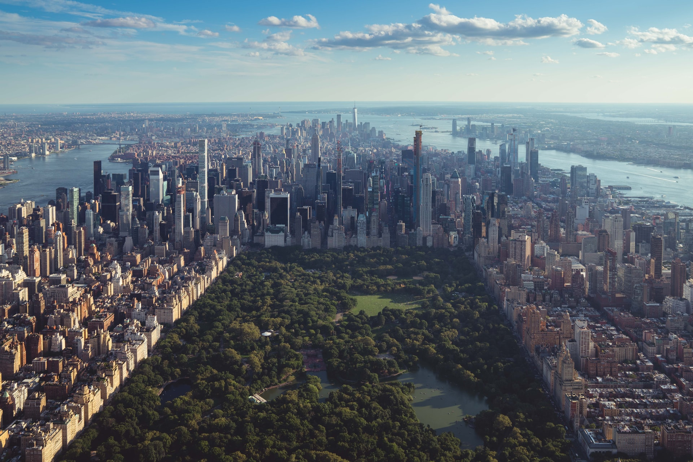
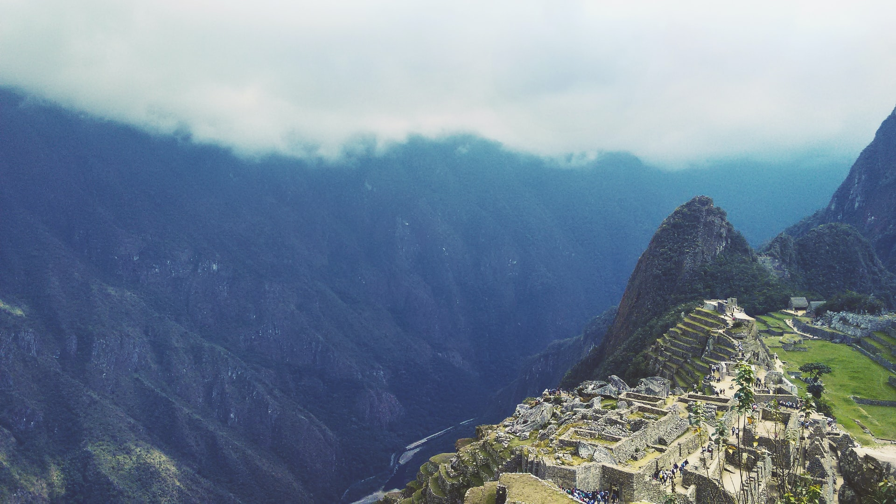
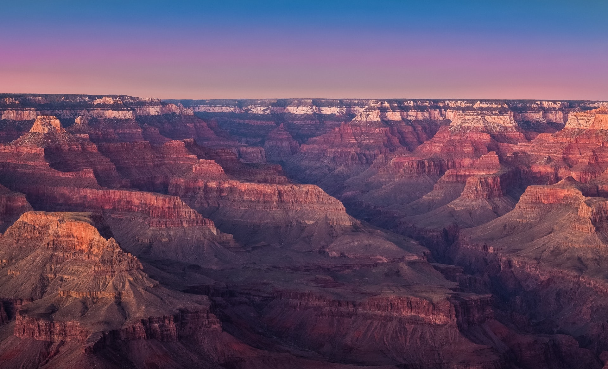
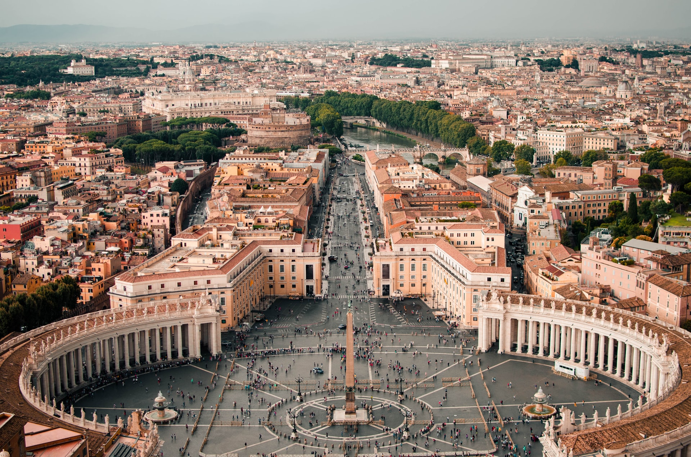
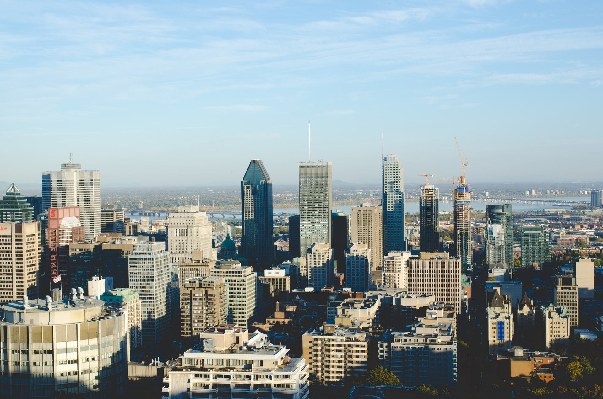
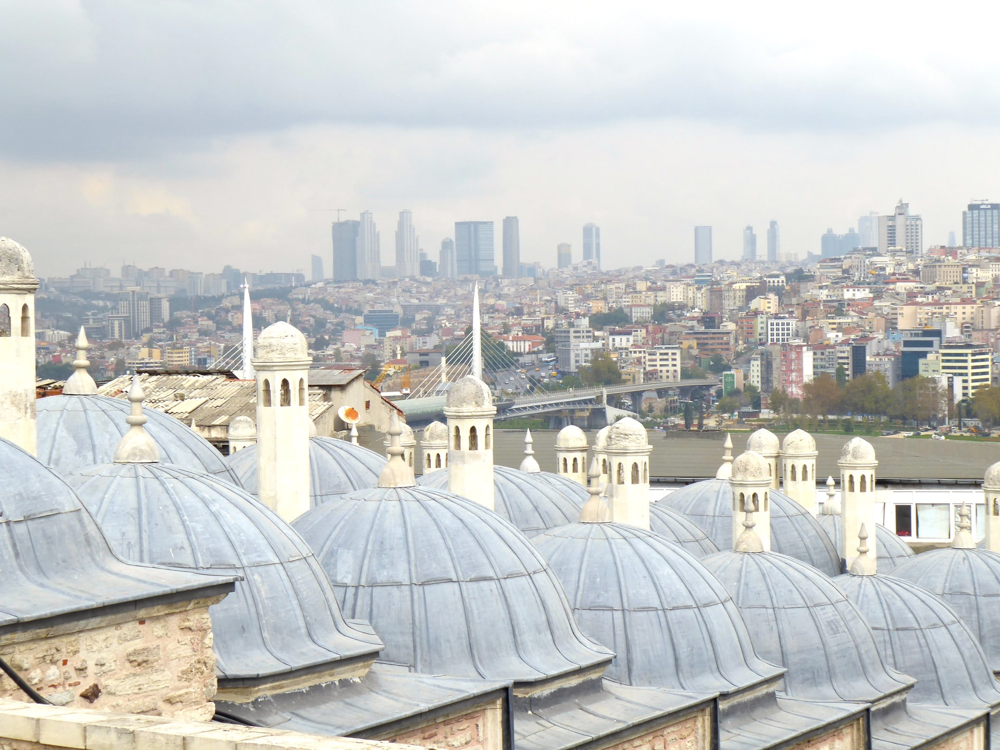
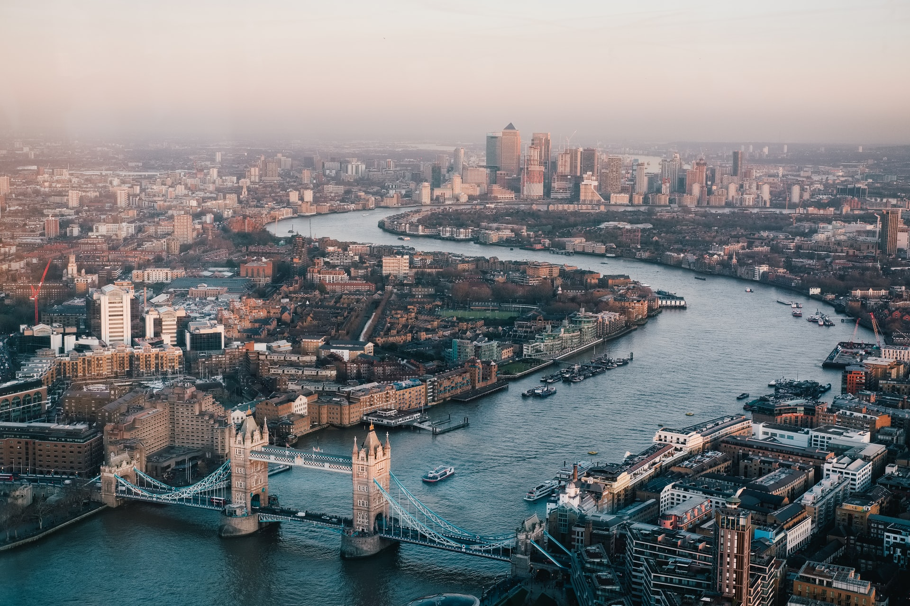

Best Cities and Countries You can visit right Now !!!
Written by Goriber Google vai
19 Sep,2020
The world is filled with such a wide variety of wonderful destinations and beautiful places to visit, it can be quite difficult to compile a list of the best ones. Thinking about a traveler who, for whatever reason, has never set foot outside his or her home town, where would be the first places they might visit?
The list of the world's best places to visit has to include great cities, like New York, Paris, London, and so on, each of which is filled with a multitude of individual sites or must-see places to visit. The list also includes specific sites, monuments, and locations, each also worthy of a visit in their own right.
For more ideas on where to go and what to see, read our list of the top places to visit in the world.
Paris, France
No visit to the French capital is complete without a trip to and a trip up its most iconic structure. The 300-meter-tall Eiffel Tower was quite simply, the tallest man-made structure in the world, from its opening in 1889 for 41 years until 1930.
Use your visit as a stair workout and climb the 300 steps from ground level to the first of three levels on the tower. If you're in great shape, climb another 300 steps to the second level. Then hop on the elevator here to get to the top. Aside from the workout, you'll also skip most of the crowd who want to take the elevator the whole way.
Read more:things to do when you reach
Manhattan, New York
One of the five boroughs of New York City, Manhattan is actually an island, bordered by the East River and the Hudson (and a little bit by the Harlem River). This island is a bit less than 23 square miles and is home to almost two million residents. Add in the daily influx of workers, and the island routinely holds close to four million people.
No other city in the world offers the frenetic energy of New York City. It's filled with the world's best shopping and dining, along with incredible museums.
Manhattan also has a giant green heart, Central Park. No matter the season, it provides a playground for the city's residents, offering a range of activities from museums to a zoo. There's also a lot of green space where you can play and relax, along with miles of running, biking, and skating trails.
Read more:things to do when you reach
Machu Picchu, Peru
Located high in the Andes mountains of Peru, Machu Picchu is now believed to have been a sacred royal retreat for the Incan rulers. Built in the 15th century AD and abandoned less than a 100 years later, the remote site continues to amaze with its perfectly joined, mortarless, intricate stonework. Huge multi-ton blocks of stone are perfectly joined with each other, without the use of mortar or cement.
The journey to Machu Picchu typically starts in the mountain city of Cusco, which was the capital city of the Inca Empire. Cusco is a fascinating place to explore-be sure to spend a few days there before or after your Machu Picchu adventure.
It's possible to hike the Inca Trail from Cusco to Machu Picchu. The full hike takes five days, but you can also start closer and do a one-, two- or three-day hike along the trail. Most people take the train from Cusco, which takes about three and a half hours.
Read more:things to do when you reach
The Grand Canyon, Arizona
This incredible natural wonder is in the U.S. state of Arizona. It's one of those beautiful places for which photos or video just don't do it justice-its sheer size and scope is hard to comprehend.
With geology formed over the past two billion years, yes billion, the 277 mile-long canyon itself is believed to have been started around five to six million years ago. It was formed by the flow of the Colorado River, which still flows through it and continues to erode the geology along its course. The Grand Canyon is up to 18 miles wide in places and up to a mile deep. Imagine standing on the edge, looking down a sheer rock wall almost a mile to the river below.
Most visitors come to the area referred to as the South Rim, and there is a range of accommodations available, from tents to a rustic luxury canyon-side resort built from logs. There are a few accommodations on the remote North Rim, and these are reserved years in advance.
Many visitors access the canyon via the historic Grand Canyon Railway, which runs from the town of Williams, Arizona. The 64-mile rail line provides an entertaining way to get to the canyon with food and live music onboard. For those driving, the canyon is about a three-and-a-half-hour drive north from Phoenix (or south from Las Vegas).
Read more:things to do when you reach
Rome, Italy
The Eternal City is more like a giant, living museum. Visitors are immersed in and surrounded by thousands of years of history. It's a relatively compact city, and a three-day itinerary gets you to the minimum number of must-see places.
These must-see sites for any visitor include the Colosseum and adjacent Roman Forum; the Pantheon; and Vatican City, a separate country in the middle of central Rome.
Take some time to explore the outskirts of Rome, too. Consider a hike along a tomb-lined section of the Appian Way, the ancient Roman superhighway, and a visit to one of the aqueduct ruins outside the city.
Read more:things to do when you reach
Maui, Hawaii

This Hawaiian island offers a wide range of experiences for visitors. You can surf, enjoy a meal on the beach at a five-star luxury resort in Wailea, ride a horse across a dormant volcano in Haleakala National Park, or hike through a rainforest in the West Maui Mountains. The natural scenery is amazing-it's truly one of the most beautiful islands in the world.
When it comes to accommodation, there is something for everyone here, from rustic hippie bungalow bed and breakfasts to five-star luxury resort hotels. Wailea has all the luxury resorts-it's like the beachfront Beverly Hills of Maui. If you're staying here, be sure to venture out and spend some time in Kihei, where the locals hang out.
Read more:things to do when you reach
Masai Mara, Kenya

Kenya's Masai Mara is an incredible bio-diverse area and a popular safari destination. It's an opportunity to see the "big five" animals (lion, leopard, rhinoceros, elephant, and Cape buffalo) all during one trip or, if you're lucky, during one afternoon.
The protected Masai Mara National Reserve park area is huge, over 1,500 square kilometers of mainly grassland, extending all the way to the Serengeti plain of Tanzania. The popular times to visit are during the twice-yearly migrations, the main one being in July and August. Over a million wildebeest and other animals cross the area in huge groups to go from one feeding area to another. Most visitors fly into Nairobi, then take a small bush plane to the Mara.
Read more:things to do when you reach
Montreal, Canada
As you listen to the sound of French being spoken around you and explore Old Montreal, wandering down its narrow cobblestone streets-you might think you're in France. The historic area is filled with quaint shops and cafés; this Canadian city can be a chance to experience a bit of Europe in North America.
The city also has a thriving food scene, with several popular farmers markets, including the Atwater Market and the Jean Talon Market. It's also known for its bagels, cooked hot and fresh by several iconic must-visit bakeries.
Be sure to visit the beautiful Notre-Dame Basilica and take a drive up to Mount Royal, the big hill (or low mountain) the city is named after. You'll be rewarded with some amazing views extending all the way to the port.
Read more:things to do when you reach
New Zealand

With its striking natural beauty, friendly citizens, and recent popularity due to its use as the filming location for the Lord of the Rings films (as well as many others), this island nation is one of the world's great places to visit. The biodiversity here is amazing-it's believed New Zealand was one of the last places on earth to have human inhabitants.
Start your visit off in the capital city of Auckland, with its culture, history, and museums. Spend some time on the water and at the beach-Waitemata Harbour has beaches, along with a range of sailing and boating activities.
Visit the Rotorua area to learn about and experience indigenous Maori culture and head to Queenstown to experience the country's wide range of outdoor extreme action sports. Remember, this is where bungee jumping was invented.
Read more:things to do when you reach
Istanbul, Turkey
Turkey's capital city is another destination that offers a great mix of culture, food, and history. There are thousands of years of history here, starting with Ancient Greeks and Ancient Romans and leading up through the Ottoman Empire.
It's an Islamic country with a secular government, so it's a good place for Western tourists to experience Islamic culture. There's a mix of the new and the timeless here unlike anywhere else. You can spend the night at a wonderful restaurant eating great Turkish food and dancing to Turkish music, then rise (very early) in the morning to the sound of the Ezan or morning Islamic call to prayer. It echoes across the rooftops as it's broadcast from loudspeakers set atop the minarets of the city's mosques
Istanbul has excellent public transit, which means it's easy to get around and explore all the major sites and monuments. Must-see places include the Blue Mosque, Hagia Sofia, and Topkapi Palace.
Read more:things to do when you reach
Angkor Wat, Cambodia

Located just outside the Cambodian city of Siem Reap, Angkor Wat is the largest religious site in the world. It was created originally as a Hindu temple and mausoleum for the Khmer ruler in the early part of the 12th century and was converted to a Buddhist temple at the end of the 12th century. Just part of a enormous ancient city. Angkor Wat is the temple area, Angor Thom was the city and palace area. There are hundreds of other ruin sites in the area, all part of the ancient capital of Angkor
Siem Reap and its temples and ruins are now very easily accessible via daily flights from Hong Kong and other large Asian cities. Accommodations range from inexpensive guesthouses to lavish luxury resorts, with everything in between.
Read more:things to do when you reach
London, England
This historic English city is another destination just filled with incredible places to visit. A trip to London is an opportunity to visit iconic places like the Tower Bridge, Buckingham Palace, and the Tower of London.
Take advantage of the city being a cultural center as well by seeing a West End theater show or watching a musical performance at the Royal Albert Hall. Modern London is also a city of fine dining, luxury hotels, and world-class shopping.
Don't miss the museums, the vast British Museum is free, and usually quite crowded. Make time to visit The Wallace Collection, a free museum on Oxford Street. It has one of the world's greatest collections of furniture and porcelain, along with some important Old Master paintings.
Read more:things to do when you reach